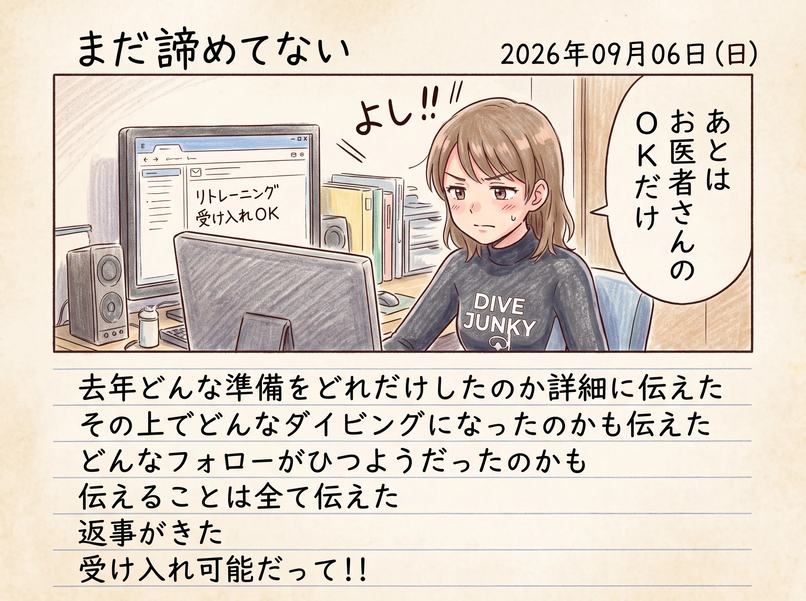

The road Orz passed by 2026 年 09 月
09 月 06 日 ( 日 )
Dive #211 絵日記 2026/09/06 (Sun) まだ諦めてない
とあるダイビングショップに送ったメールの内容

題名: リフレッシュダイブについて
名前: OrzBruford
フリガナ: 自由に呼んで
年齢: 62歳
住所: 省略
メッセージ本文:
はじめまして。OrzBruford と申します。
御社にてリフレッシュコースの受講が可能かどうか、お伺いしたくご連絡いたしました。
現時点ではリフレッシュコースのみを考えております。
開催場所については須磨でまったく問題ありません。
受講可能な場合、事前に必要となる健康チェックシート、医師の診断書・意見書等がありましたら、あわせてご教示いただければ幸いです。
私のダイビング歴等は以下のとおりです。
氏名: OrzBruford
年齢: 62歳
【認定】
- 1987 NAUI Open Water I Scuba Diver
- 1990 NAUI LIFESAVER（最終更新 2001)
- 1990 NAUI Diving Rescue Techniques SP
- 1993 NAUI Advanced Diver
- 1994 NAUI Equipment SP
- 1994 NAUI Master Scuba Diver
- 1994 NAUI Assistant Instructor（2001/12/31失効）
- 1999 NAUI Nitrox Diver
最終潜水日: 2025/09/23
推定経験本数: 約500本
記録が残っている潜水本数: 245本
2004/09/20から2025/09/09まで、約21年間の長期ブランクがあります。
2025年にダイビングを再開しました。
ダイビングログ: https://mitsugu.github.io/divinglogbook/
再獲得を優先しているスキル等については、以下にまとめています。
https://orzbruford.jp/202511/19.html#2025111901
【所有機材】
- ウェットスーツ（ロクハン）
- マスク
- スノーケル
- ブーツ
- フィン
- BCD
- シグナルフロート
- ライト
- その他小物
【健康状態について】
体幹機能障害3級があります。
昨年のダイビング再開時には、医師への相談を含め、以下の手順を整理した上で潜水を行っていました。
https://mitsugu.github.io/disability-diving/
現在は、ビーチダイブを行う場合に必要となる条件・手順について、あらためて整理しているところです。
かかりつけ医への相談、診断書・意見書等の提出が必要な場合は対応可能です。
以上を踏まえて、御社のリフレッシュコースで受け入れ可能かどうかご判断いただければ幸いです。
また、判断に必要な追加情報がありましたらご指示ください。
よろしくお願いいたします。
それに対するショップ側の回答。
お問い合わせ頂き、ありがとうございます。
リフレッシュダイビングですが、お送り頂きましたスキルの復習が充分できると思います。
ご希望の日があればお知らせください。
メディカルチェックシートのご確認を頂き、
該当項目があれば医師の診断書が必要となりますがその他には特別当店で留意事項などはありません。
ご不明な点などがございましたらいつでもご連絡お待ちしております。
- Category :
- #Records of Orz's Road
- #絵日記
- #ダイビング
- #スクーバダイビング
- #リトレーニング
- #ダイバーとしての再起を賭けて